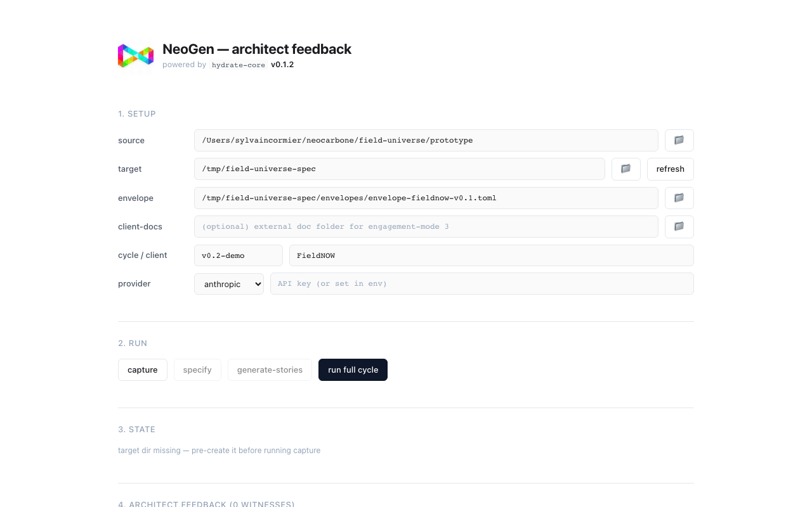
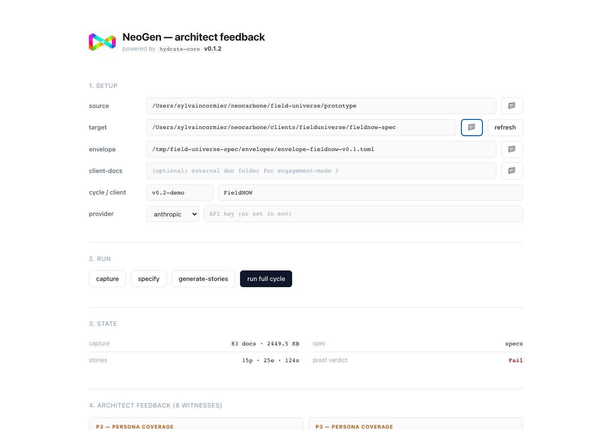
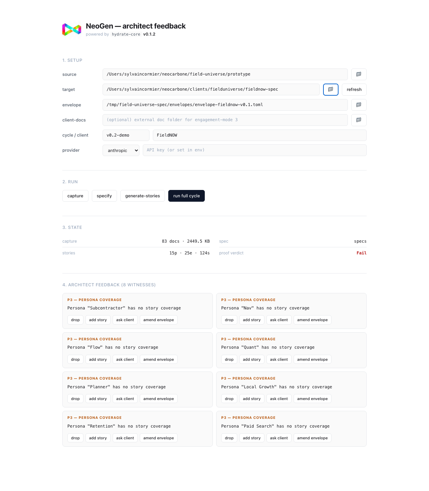

Software that bends to user needs — all the while staying compliant.
Today the NeoGen pipeline shipped its first AI-generated user story directly into a real FieldNOW codebase as an open pull request, with every gate green and three independent layers of verification confirming the result. The substrate now lives in the repo alongside the code it produced — every iteration leaves a signed, cryptographically verifiable receipt that an external reviewer can audit offline. The pipeline is the mechanism by which software can bend to user needs without losing its compliance posture: every change is regenerable from spec, every change carries its own audit trail, and every change is independently re-verifiable by anyone with a clean checkout and the public key.
| Story | US-1.01.1 — As an Owner/Admin, I can create and configure a business tenant with business hours, service area, and company settings |
|---|---|
| Target repo | Neo-Carbone/fieldnow-codebase |
| Pull request | #1 — m3(US-1.01.1): iteration 1 |
| Files | 14 (Rust server + TypeScript client + tests + substrate artifacts) |
| Coding agent | Claude Sonnet 4.6 via the NeoGen substrate |
| Time to ship | ~4 minutes per iteration end-to-end |
| Reproducible | bash scripts/m3-demo.sh — one command, fresh clone every run |
Every iteration walks the same chain. Each stage produces a typed verdict
(Hold / Fail / Unknown); a failure at any stage
blocks the next. If gates fail, the substrate re-dispatches once with the failing
witnesses fed back into the prompt as corrective signal (gate-retry); if
gates still fail, the iteration is blocked, not shipped.
The automated pipeline (above) is one of two surfaces the substrate exposes. The other is the architect feedback UI — a browser app that surfaces the verifier's witnesses to a human architect and lets each one be resolved with a single click. Every architect decision opens a typed PR on the spec repo with full provenance (witness id, action, tier, decision timestamp). The substrate never silently absorbs a witness; the architect either resolves it or it stays open.



The substrate's Hold claim is verified three independent ways for any PR opened by this pipeline. The three layers cross-check each other; the substrate is not its own only witness.
## M3 iteration
**Story:** US-1.01.1 · **Iteration:** 1 · **Commit:** e94b0d8f4507
## Witness chain
- Envelope language: Mixed { server: Rust, client: TypeScript }
- P10 (envelope-language compliance): Hold
- Gate aggregate: Hold
- Model: claude-sonnet-4-6
- Signing key fingerprint: b0e4ac1c7ee8f27b
## Bundle
- Bundle (CBOR): .neogen/m3/iteration-1-US-1.01.1-bundle.cbor
- Bundle signature: .neogen/m3/iteration-1-US-1.01.1-bundle.cbor.sig
The substrate is not a pattern of practice — it's grounded on formal mathematics. The K₃
verdict algebra (Hold / Fail(witness) / Unknown)
is formally verified in Lean 4 across 16 theorems, with a separate
12-theorem witness-bearing extension and a proven forget homomorphism between
the two layers. The substrate composition direction is grounded on Bianconi's higher-order
network theory and the surrounding spectral literature; the Hodge decomposition on the
skill simplicial complex gives a measurable account of where verification is doing real
work versus circling. The Bayesian update calculus follows Jaynes.
The point of the substrate is not that it shipped one story. The point is that the verdict it published — that the story holds — is independently checkable by anyone with the bundle, the verification key, and a clean checkout of the repo. The substrate publishes claims it does not interpret; the verifiers interpret claims they did not produce. Each layer is correct on its own terms.
$ bash ~/neocarbone/lovable-bridge/pipeline/scripts/m3-demo.sh == M3-α-launch demo == story: US-1.01.1 iteration: 1 spec: ~/neocarbone/clients/fielduniverse/fieldnow-spec target repo: ~/neocarbone/fieldnow-codebase → neogen m3 --fresh-clone --apply --gate --gate-retry --pr fresh-clone: ✓ target dir freshly cloned from origin apply: Hold ✓ branch=m3/US-1.01.1 files=14 p10: Hold ✓ envelope-language compliance verified install: Hold ✓ tsc: Hold ✓ vitest: Hold ✓ playwright: Hold ✓ aggregate: Hold ✓ bundle: Hold ✓ signed Ed25519 (959 bytes CBOR) in-repo: .neogen/m3/iteration-1-US-1.01.1-bundle.cbor pr: Hold ✓ https://github.com/Neo-Carbone/fieldnow-codebase/pull/1
One command. Fresh clone each run; same story re-runs land on the same PR (deterministic branch + force-with-lease push). Different stories → different branches → different PRs. The substrate is idempotent on the story dimension.
First NeoGen-produced story shipped end-to-end. Witness chain in body, bundle in .neogen/m3/, 3 CI jobs green.
The pipeline that produced PR #1. Steps 5–8 (bundle / PR / gate-retry / deferred-work extractor) + ADR 0010 (verification substrate strategy) + CI bootstrap.
Architecture, formal grounding, verification ladder. §10 Status (2026-05-12) covers what shipped today and the substrate feature inventory; §10.5 covers the substrate-composition direction (Bianconi higher-order network theory + Hodge decomposition); §6 covers the verification ladder; §5 covers operational phasing.